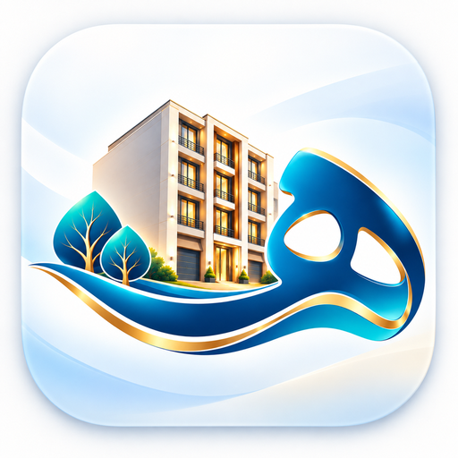

مدیریت مجتمع مسکونی «هستی»
این صفحه فقط برای نصب آیکون و ورود مطمئن به سامانه مدیریت مجتمع استفاده میشود.
ورود به سامانهدر حال باز کردن سامانه…
در iPhone این صفحه را در Safari باز کنید، سپس
Share → Add to Home Screen
را بزنید. آیکون «هستی» باید در پیشنمایش دیده شود.